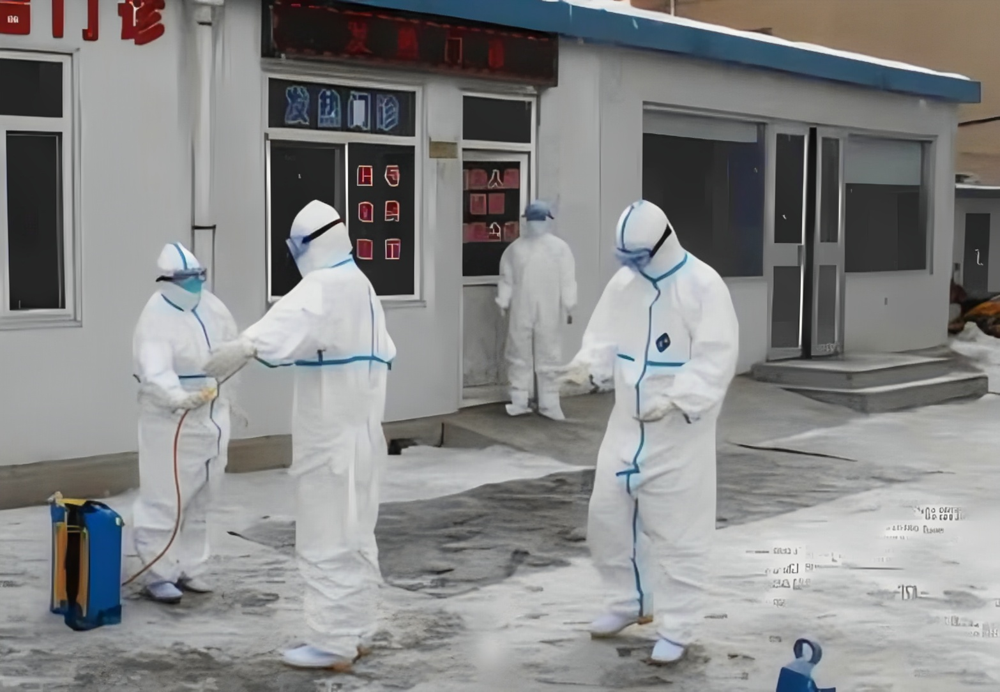

基本原则 1、家庭以日常清洁为主，预防性消毒为辅。 2、不对室外环境开展大规模消毒，不对外环境进行空气消毒。 3、不直接使用消毒剂对人进行消毒。 4、不使用高浓度消毒剂做预防性消毒。 5、不对水塘、水库等环境投加消毒剂。 6、严格遵循消毒产品说明书使用，严禁超范围使用。 主要方法 1、环境物体表面消毒 可选择含氯消毒剂、二氧化氯、季铵盐等消毒剂擦拭、喷洒或浸泡消毒;也可采用经验证安全有效的物理消毒方法。 2、手卫生 有肉眼可见污染物时，应使用洗手液(或肥皂)在流动水下洗手。无肉眼可见污染物时可选用速干手消毒剂，或直接用75%乙醇进行擦拭消毒。醇类过敏者，可选择季铵盐类等有效的无醇手消毒剂。 3、室内空气消毒 室内空气以通风换气为主，无需进行化学消毒剂喷雾消毒。可采取排风(包括自然通风和机械排风)措施，保持室内空气流通，每日通风2-3次，每次不少于30分钟。如需空气消毒，可采用循环风空气消毒机进行空气消毒;无人情况下，还可用紫外线或其他安全有效的方法对空气进行消毒。 家庭日常清洁 和预防性消毒 日常情况下，家庭无需进行消毒，每日做好居家环境的清洁卫生和自然通风，衣服、被褥需经常清洗、晾晒。如确需预防性消毒，遵照以下方法: 1、物体表面 桌椅、床(炕)洗脸池家具等一般物体表面用有效氯500mg/L含氯消毒剂或250mg/L二氧化氯擦拭或喷洒消毒，作用30分钟或用有效的消毒湿巾进行擦拭消毒。 2、餐(饮)具 餐(饮)具清除食物残渣、清洗后，煮沸或流通蒸汽消毒15-30分钟，或采用消毒柜等消毒方式，也可用有效氯250-500mg/L的含氯消毒剂，浸泡消毒30分钟后，再用清水将残留消毒剂冲净。 3、手机、钥匙等小物件 手机、钥匙等小物件的表面可用75%酒精擦拭消毒。 4、卫生洁具 洗手池、马桶等卫生洁具，可用有效氯500-1000mg/L含氯消毒剂或250-500mg/L二氧化氯或其他有效的消毒剂擦拭或喷洒消毒，作用30分钟后清水清洁去残留。 5、地面、墙壁 用有效氯500mg/L含氯消毒剂或250mg/L二氧化氯擦拭或喷洒消毒，作用30分钟。 6、纺织品 毛巾、衣物等纺织品可用煮沸消毒30分钟，或先用有效氯250mg/L的含氯消毒液浸泡30分钟，然后常规清洗。 7、手卫生 勤洗手，在流动水下，用洗手液或肥皂洗手，必要时可用75%酒精等消毒湿巾、速干手消毒剂进行消毒。 公共场所的 预防性消毒 根据不同场所和环境等污染风险特点，分类使用不同的消毒剂、消毒浓度和消毒方式。对运行中的商超，宾馆，农贸市场、学校、交通工具(站点)、办公楼宇、建筑工地、养老机构等重点场所和单位，每天至少开展2次预防性消毒，重点对高频接触的门把手、电梯按钮等环境物体表面的加大消毒频次。已关闭的场所，在开业运行前要进行预防性消毒。 1、物体表面 用有效氯500mg/L含氯消毒剂或250mg/L二氧化氯擦拭或喷洒消毒，作用30分钟;不耐腐蚀的物体表面也可用1000mg/L的季铵盐类消毒剂进行喷洒、擦拭或浸泡消毒，或用有效的消毒湿巾进行擦拭消毒。 2、餐(饮)具 公共场所应加强餐(饮)具的消毒，餐(饮)具清除食物残渣。清洗后，煮沸或流通蒸汽消毒15-30分钟。或采用消毒柜等消毒方式，也可用有效氯250-500mg/L的含氯消毒剂，浸泡消毒30分钟后，再用清水将残留消毒剂冲净。 3、卫生洁具 对公共卫生间的地面、洗手水池便器等可用250-500mg/L二氧化氯或500-1000mg/L含氯消毒剂或其他有效的消毒剂擦拭或喷洒消毒，作用30分钟后清水清洁去残留。 4、垃圾桶、垃圾存储点 做好垃圾分类管理，及时收集并清运，加强垃圾桶等垃圾盛装容器的清洁，可定期对垃圾桶、垃圾暂存点进行消毒处理，可用有效氯500-1000mg/L含氯消毒剂擦拭或喷洒消毒，作用30分钟。 5、工作服等纺织物 工作服、座椅套等纺织物应保持清洁，可根据实际需求，定期洗涤，消毒处理。可用流通蒸汽或煮沸消毒30分钟，或先用有效氯250mg/L的含氯消毒液浸泡30分钟，然后常规清洗。 6、地面、墙壁 用有效氯500mg/L含氯消毒剂或250mg/L二氧化氯擦拭或喷洒消毒。 封管控区，老旧小区等 重点区域的预防性消毒 1、封控、管控区内，重点对小区内核酸采样点、防疫物资保障场所(点)、垃圾储存点、快递集散点等区域环境开展预防性消毒，垃圾和污水严格按照规范要求处理。 2、成片老旧小区如环境卫生较差，开展消毒时可适当提高消毒剂浓度，以保证消毒效果。 3、家庭以日常清洁为主，预防性消毒为辅，同时做好室内开窗通风。 4、合理设置快递物品的集中消毒区域。对零星送达的快递物品，在集中消毒区域设置置物架，按规定对快递物品外包装及置物架进行喷洒消毒。对批量送达的快递物品，划定专门区域集中卸货和消毒。 注意事项 1、选择安全有效的消毒产品。在购买使用前，可在“全国消毒产品网上备案信息服务平台"进行合规性查询。 2、用于低温消毒的低温消毒产品使用说明书应有相应低温使用范围。 3、配置和使用消毒剂时要注意做好个人防护，必要时穿戴口置和手套等。 4、消毒剂有腐蚀性和漂白作用，怕腐蚀、褪色物品，消毒后应再用清水清洗，去除残余消毒剂。 5、表面污物会影响消毒效果，消毒前应做好清洁。 6、消毒剂应保存在干燥、避光、通风的环境下，应避免放置儿童可及处。消毒剂只可外用，不可内服。
上海五美是专业的上海保洁公司，提供写字楼保洁、大型综合商场保洁、工厂保洁、学校保洁、小区保洁、别墅区保洁、办公室保洁、大型游乐园保洁、开荒保洁、大理石翻新和养护、地毯清洗、水箱清洗、地面清洁、外墙清洗、物业管理、日常保洁外包等。欢迎广大新老客户前来咨询！
- 